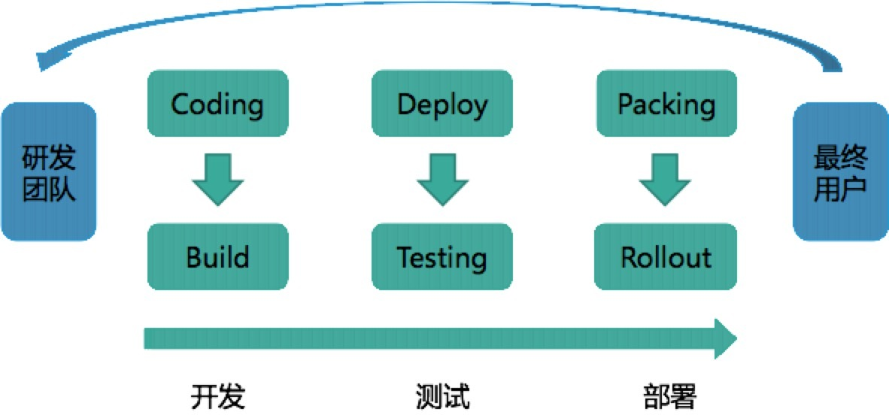

- 00 开篇词 量身定制你的持续交付体系.md.html
- 01 持续交付到底有什么价值？.md.html
- 02 影响持续交付的因素有哪些？.md.html
- 03 持续交付和DevOps是一对好基友.md.html
- 04 一切的源头，代码分支策略的选择.md.html
- 05 手把手教你依赖管理.md.html
- 06 代码回滚，你真的理解吗？.md.html
- 07 “两个披萨”团队的代码管理实际案例.md.html
- 08 测试环境要多少？从现实需求说起.md.html
- 09 测试环境要多少？从成本与效率说起.md.html
- 10 让环境自己说话，论环境自描述的重要性.md.html
- 11 “配置”是把双刃剑，带你了解各种配置方法.md.html
- 12 极限挑战，如何做到分钟级搭建环境？.md.html
- 13 容器技术真的是环境管理的救星吗？.md.html
- 14 如何做到构建的提速，再提速！.md.html
- 15 构建检测，无规矩不成方圆.md.html
- 16 构建资源的弹性伸缩.md.html
- 17 容器镜像构建的那些事儿.md.html
- 18 如何做好容器镜像的个性化及合规检查？.md.html
- 19 发布是持续交付的最后一公里.md.html
- 20 Immutable！任何变更都需要发布.md.html
- 21 发布系统一定要注意用户体验.md.html
- 22 发布系统的核心架构和功能设计.md.html
- 23 业务及系统架构对发布的影响.md.html
- 24 如何利用监控保障发布质量？.md.html
- 25 代码静态检查实践.md.html
- 26 越来越重要的破坏性测试.md.html
- 27 利用Mock与回放技术助力自动化回归.md.html
- 28 持续交付为什么要平台化设计？.md.html
- 29 计算资源也是交付的内容.md.html
- 30 持续交付中有哪些宝贵数据？.md.html
- 31 了解移动App的持续交付生命周期.md.html
- 32 细谈移动APP的交付流水线（pipeline）.md.html
- 33 进阶，如何进一步提升移动APP的交付效率？.md.html
- 34 快速构建持续交付系统（一）：需求分析.md.html
- 35 快速构建持续交付系统（二）：GitLab 解决代码管理问题.md.html
- 36 快速构建持续交付系统（三）：Jenkins 解决集成打包问题.md.html
- 37 快速构建持续交付系统（四）：Ansible 解决自动部署问题.md.html
- 持续交付专栏特别放送 答疑解惑.md.html
- 持续交付专栏特别放送 高效学习指南.md.html
- 结束语 越痛苦的事，越要经常做.md.html
- 捐赠
01 持续交付到底有什么价值？
随着云计算、容器等新兴技术的发展，“持续交付”这个老生常谈的问题，忽如一夜春风来，仿佛找到了从理想通向现实的大门。各类相关工具、产品、服务，也是纷纷出现：如Jenkins 2.0，Jenkins X，阿里云效，Netflix Spinnaker，Jfrog Artifactory等等。
到底是什么魔力使得各大公司和厂商对“持续交付”如此趋之若鹜？那么，作为本专栏的第一篇文章，我就先来为你揭示“持续交付”真正的价值。
你了解持续交付吗？
持续交付，到底是什么意思，它的定义是什么？《持续交付：发布可靠软件的系统方法》一书中把“持续交付”定义为：
持续交付是软件研发人员，如何将一个好点子，以最快的速度交付给用户的方法。
是不是听起来有点抽象呢？其实这就好像你去问100个哲学家，“哲学”的定义是什么，你会获得101个答案一样。与马丁 · 福勒（Martin Fowler）老爷子在2006年，提出“持续集成”概念时一样，我们可以把 “持续交付”定义为“一套软件工程方法论和许许多多的最佳实践的集合”。
但即使熟知了定义和方法论，其实也还是如海市蜃楼一般，无法落地，因为大家所贡献的最佳实践才是持续交付理论的核心。只有真正在工作中贯彻和使用这些实践工具，才能体会持续交付的真正含义和作用。
持续集成、持续交付和持续部署的关系
了解了持续交付，你可能会说“持续集成”、“持续部署”又是什么意思， 它们和“持续交付”有什么关系呢。那我就给你简单解释一下。
我们通常会把软件研发工作拆解，拆分成不同模块或不同团队后进行编码，编码完成后，进行集成构建和测试。这个从编码到构建再到测试的反复持续过程，就叫作“持续集成”。
“持续集成”一旦完成，则代表产品处在一个可交付状态，但并不代表这是最优状态，还需要根据外部使用者的反馈逐步优化。当然这里的使用者并不一定是真正的用户，还可能是测试人员、产品人员、用户体验工程师、安全工程师、企业领导等等。
这个在“持续集成”之后，获取外部对软件的反馈再通过“持续集成”进行优化的过程就叫作“持续交付”，它是“持续集成”的自然延续。
那“持续部署”又是什么呢？软件的发布和部署通常是最艰难的一个步骤。
传统安装型软件，要现场调试，要用户购买等等，其难度可想而知。即使是可达度最高的互联网应用，由于生产环境的多样性（各种软件安装，配置等）、架构的复杂性（分布式，微服务）、影响的广泛性（需要灰度发布）等等，就算产品已是待交付的状态，要真正达到用户可用的标准，还有大量的问题需要解决。
而“持续部署”就是将可交付产品，快速且安全地交付用户使用的一套方法和系统，它是“持续交付”的最后“一公里”。
可见，“持续交付”是一个承上启下的过程，它使“持续集成”有了实际业务价值，形成了闭环，而又为将来达到“持续部署”的高级目标做好了铺垫。
虽然从概念上你可以这样理解，但从实践和我个人多年的经验来说，往往是从“持续部署”（自动化发布）开始推进“持续交付”，这才是一条优选的路径。这部分内容我会在后续文章中详细介绍。
持续交付的显性价值
持续交付也通常以“发布流水线”的方式来解释，即研发团队从开发，到测试，再到部署，最终将产品交付给最终用户使用的过程。如下图：

虽然持续交付着重打造的是发布流水线的部分，但它所要达到的目标是在“最终用户”和“研发团队”之间建立紧密的反馈环：通过持续交付新的软件版本，以验证新想法和软件改动的正确性，并衡量这些改动对软件价值的影响。
这里说的“软件价值”，说白了就是收入、日活、GMV等KPI指标了。
通常我们在实施持续交付后，都能够做到在保证交付质量的前提下，加快交付速度，从而更快地得到市场反馈，引领产品的方向，最终达到扩大收益的目的。
在互联网应用盛行、速度为王的今天，持续交付的价值更是被突显出来。持续交付的能力，正成为评定一家互联网公司研发能力的重要指标。
持续交付的隐性价值
除了上面这些你一眼就能看出来的价值外，如果作为不同的角色、站在不同的角度去看持续交付之后的变化，你还会发现其他一些隐性价值，而其中有一些影响甚至远远超过你的预期。
或者可以这么说，通过介绍持续交付的隐性价值，我希望你能够了解到，无论是什么企业，无论你的职位高低，都可以或者应该去尝试持续交付，它一定会让你觉得物超所值。
如果你是CTO或者是一个较大规模研发团队的管理者
你是不是时常困扰于技术选型的问题？- 技术选型最大的难点在于影响大，又难以验证（或者验证效率低下）。而造成这些困境的绝大多数原因是没有合适的测试环境，比如环境差异造成测试数据缺乏说服力，又比如缺少隔离环境造成服务冲突等等。而这正是持续交付的用武之地。- 持续交付的实施，将全面改善企业对测试环境的管理方法，使得环境管理更合理、更自由。我也将在后续章节里介绍如何做好环境管理。
你是不是经常头痛于已制定的标准难以落地？- 标准、规范、流程的落地，都需要载体，而最好的载体就是平台工具。而持续交付是一整套平台工具的落地，几乎涵盖了研发的整个生命周期，是天然的、最佳的载体。- 另外，持续交付的落地本身就伴随着各类标准、规范、流程的制定和实施，可以说两者相互依存，是非常好的管理思想落地方案。
你是不是时常考虑如何提高跨部门协作的效率？- 我看到的每一个持续交付实施团队，都可以说是最厉害的“拆墙大队”，拆的就是各个研发协作部门间的“隔离墙”。- 持续交付能够向各个协作部门输出统一的标准、流程和工具，提升沟通效率；并且通过大量的自动化，进一步提升各部门工作效率；还可以快速集成，把各个分散的团队，无论是横向的业务研发团队，还是纵向的技术框架团队，紧紧地联系在一起，共同进退。
你是不是担心“黑天鹅”的降临？- 既然叫“黑天鹅”，那就是说明它的产生有一定的必然性。正应了一句老话“是福不是祸，是祸躲不过”，既然躲不过，那就解决它呗。其实任何故障都有一个天敌，叫作：快速恢复。- 假设，所有的故障都可以在3分钟内恢复，你是不是觉得天下无敌了。那恢复故障最快、最有效的手段又是什么呢？当然就是回滚（或重新部署）了，而这正是持续交付所包含和着力打造的能力之一。
如果你是Team Leader
你一定希望团队的知识能够传承。- 互联网公司的人才流动之频繁已经远远超过了你我的想象。人来人往，如何将知识传承下来呢？其实在这方面，持续交付也能为团队提供很多帮助。- 首先，持续交付将团队赖以生存的工作流程进行了固化；其次，利用代码静态检查等工具，能够很好地传承团队多年来的代码规范，并作为检查项进行自动化校验；再次，自动化测试的脚本，同样是团队经验的产物。
你一定希望团队专注于业务而非工程。- 目前越来越多的公司或研发组织意识到，持续交付体系也如同中间件一样，能够从日常的业务研发工作中抽象出来，其不同只在于中间件解决架构问题，而持续交付解决工程问题。- 这样研发团队能够全力应付业务的需求，而不用总是重复奔波于一些烦人且耗时的工程问题，比如安装测试机、准备编译服务器等等。
你一定希望以一个较平稳的节奏持续工作。- 虽然在实施持续交付的初期，团队为了适应新的流程和工具，会有一定的效率下降，但之后在自动化的帮助下，团队效率会有一个明显的提升并逐渐稳定下来。- 持续交付就是这样通过稳固的流程、自动化的工具和公开而真实的数据，来避免发布前夕容易发生的“死亡行军”式开发阶段。
如果你是产品经理
你应该是产品真正的第一个用户。- 持续交付不仅仅是可以保证每一个变化都能及时得到测试以及反馈，更多的是解决测试与实际发布时存在差异的问题。- 产品人员再也不会陷入“为什么用户端运行的结果，和在测试环境中的不一致”这样的窘境，他们将真正成为第一个用户，而不再是最后一个QA。
你应该完全知悉当前的进度和质量。- 作为产品人员，你是不是一直有这样的感觉：和研发团队之间总有一扇墙，程序员们似乎并不乐意告诉产品人员项目的真相；而最终总有这样那样的理由造成延期，产品人员往往无话可说。- 那么，持续交付就能够实时地反应当前的开发情况，从而帮助产品人员决策和调整。
你的产品应该随时能发布。- 计划永远赶不上变化，任何产品人员都希望自己的产品能够随时处于可发布状态。这样就能灵活地交付已完成的功能，迎合市场或业务的需要。- 本质上，做到代码上线和业务上线的解耦分离，这也正是持续交付方法论强调的一个重点。
如果你是一个程序员
你可以通过对持续交付的学习，进一步加强自己对整个软件工程的认识。- 持续交付涵盖了软件交付端到端的整个周期，其覆盖面不仅仅包括编码，还包括：设计、测试、部署、运维、运营等等。- 如果你对自己的发展有更高的要求，那么你就应该学习一下持续交付的内容，它能让你看到更多与编码有关的其他东西，比如不同的编码方式等；也能让你站在更高的角度去看待自己的工作：研发效率的提高往往不是个人能力的提高，而是集体协同效率的提高。
你可以利用持续交付的工具或最佳实践，提高自己的工作效率和质量。- 随着持续交付的流行，其配套的实践和工具也层出不穷。如果你玩过ping-pong式的结对编程（A写测试，B写实现，然后B写下一个测试，A写重构和实现），你一定会觉得编程如此轻松有趣，而这种TDD的方式也很好的保证了代码质量。
你可以参与到持续交付实施中去，享受为其他程序员提供效率工具的挑战和乐趣。- 试想一下，如果你是一个出租车司机，而你的乘客却是舒马赫（F1世界冠军），此时你开车的压力会有多大。其实参与到持续交付的实施中也是一样，因为你正在用程序员的方式改造程序员的工作习惯，为程序员提供工具。- 虽然挑战和压力巨大，但这又是如此有趣，你将会站在另一个高度去看你曾经的工作，不想试试吗？
如何评估持续交付的价值
我跟你说了这么多持续交付的价值，那如何评估它呢？这是一个非常难的问题，我自己每年在绩效考评时也都会问自己这个问题：我到底应该怎么给老板汇报呢？我可以量化持续交付的价值吗？
首先，你一定会说，我可以衡量产品的交付速度是否变快了。但是，实际情况下影响产品交付速度的因素实在太多，虽然我们一定知道持续交付有积极作用，但到底占比是多少呢？好像非常模糊，难以回答。
然后，你又想到，我们可以衡量各个自动化过程的速度是否变快了，比如：编译速度、发布速度、回滚速度、自动化测试速度等等。
是的，这些指标确实很好地反应了持续交付的价值，但总觉得这些并不是全部，持续交付的标准化、推行的新流程、改革的环境治理架构，好像都没有体现出来。
那到底应该怎么评估持续交付的价值呢？这里和你分享一下我在携程是怎么解决这个问题的。
我除了会评估一些常规的KPI外，更多地会换一种思考方式。既然很难量化持续交付的价值，那么我们就具象化，来看看整个工程生命周期中有多少被开发人员诟病，或者阻碍开发人员自助处理的问题点 ，即“不可持续点”：
开发不能按需产生隔离的测试环境；- 生产代码回滚后，要手工处理代码分支；- 预发布（Staging）流量要能自动分离，以便预发布测试。
在携程，我们会将所有的“不可持续点”进行记录和分解，通过OKR的考评方式，将消灭这些点作为目标，拆解出来的可行动点，作为关键结果，以这样的方式来完成绩效考评。
虽然，有些“不可持续点”已经超越了一般传统持续交付的概念，甚至有些已经超越了纯技术改进的范畴，但是持续交付仍会一直关注于消灭这些“不可持续点”。
So what，我们就是要持续交付我们的价值！
总结
接下来，我给你提炼一下今天内容的要点。
持续交付的价值不仅仅局限于简单地提高产品交付的效率，它还通过统一标准、规范流程、工具化、自动化等等方式，影响着整个研发生命周期。
持续交付最终的使命是打破一切影响研发的“阻碍墙”，为软件研发工作本身赋能。无论你是持续交付的老朋友还是新朋友，无论你在公司担任管理工作还是普通的研发人员，持续交付都会对你的工作产生积极的作用。
思考题
你的团队最希望借助持续交付解决什么现实问题？
好了，今天就聊到这里，欢迎你给我留言，下期见！
© 2019 - 2023 Liangliang Lee. Powered by gin and hexo-theme-book.